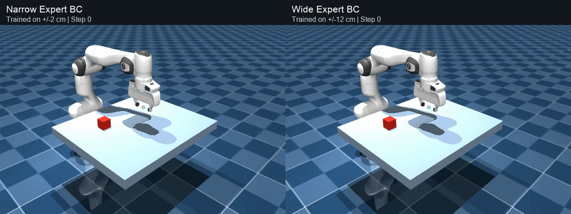
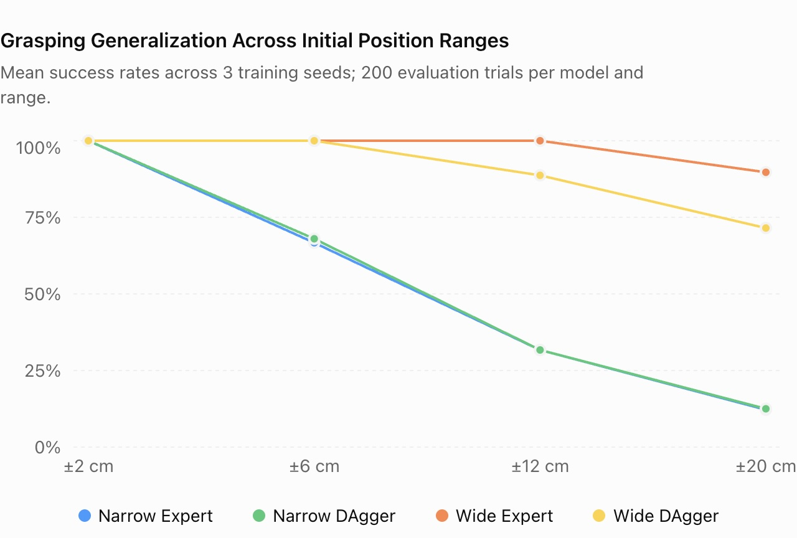

Learning Robotic Grasping
Behavior Cloning, DAgger, and Reinforcement Learning
01 — Overview & Methodology
Learning to grasp across changing object positions
I developed a simulated Franka Emika Panda system that approaches, grasps, and lifts a cube from different initial positions. My central question was how training-data diversity affects the generalization of imitation learning, compared with adding more complex learning methods.
- Environment
- MuJoCo simulation
- Robot & task
- Franka Panda · cube grasping and lift
- Evaluation
- 200 trials per position range · 3 seeds
I first collected 200 successful demonstrations from a rule-based expert controller, randomizing cube positions within ±2 cm. I used them to train a Behavior Cloning (BC) policy, which learns to imitate actions from example demonstrations.
I then compared two ways of adding training data in a controlled 2 × 2 experiment:
- Expert demonstrations: Add more actions labeled by the rule-based controller.
- DAgger: Run the learned policy, query the expert for labels on the states it encounters, and add those examples to training.
The experiment varied the training-position range (Narrow ±2 cm or Wide ±12 cm) and the additional data method (Expert or single-round DAgger). All four conditions shared the same initial dataset and used matched numbers of additional samples, the same network architecture, and the same training settings.
Separately, I tested a residual Soft Actor-Critic (SAC) policy on top of a DAgger-trained BC policy. SAC is a reinforcement-learning method that learns a policy by maximizing reward through interaction; in this setup it was used to learn residual adjustments to BC actions.
02 — Controlled Comparison
Same cube position · Same camera · Different training distributions

03 — Experimental Results
Training coverage improved performance at unseen positions
Each condition was trained with three random seeds. Every model was evaluated on 200 trials at each of four cube-position ranges: ±2, ±6, ±12, and ±20 cm. The graph shows the success-rate comparison across all four conditions and ranges.

Success-rate graph| Condition | Training range | Data added | Mean success at ±20 cm |
|---|---|---|---|
| Narrow Expert BC | ±2 cm | Expert demonstrations | 12.2% |
| Narrow DAgger BC | ±2 cm | Single-round DAgger | 12.5% |
| Wide Expert BC | ±12 cm | Expert demonstrations | 89.7% |
| Wide DAgger BC | ±12 cm | Single-round DAgger | 71.5% |
At ±12 cm, Wide Expert BC reached 100% success across all three training seeds, compared with 88.7% for Wide DAgger BC. In a separate preliminary experiment, adding residual SAC to a DAgger-trained BC policy did not improve the measured success rate.
The GIF above is one selected trial, not a summary of the full evaluation. The table and graph report aggregate results.
04 — Discussion & Key Takeaway
Coverage mattered more than complexity in this task
Expanding the training-position distribution produced the clearest improvement. Single-round DAgger did not consistently outperform adding expert demonstrations; in the Wide condition, DAgger had lower success rates across all three seeds.
One possible explanation is that the expert controller followed a time-based action sequence and was not designed to recover from failed grasps. That may have reduced the quality of corrective labels collected during DAgger. Further experiments with a recovery-capable expert and additional DAgger rounds could test this hypothesis.
Key takeaway: Carefully designed training data can matter more than a more complex learning algorithm.
These findings apply to this simulated environment, expert controller, and training procedure. They do not imply that DAgger or reinforcement learning is generally inferior to Behavior Cloning. The cube's position was available to the controller; camera-based perception and real-robot performance were outside this experiment.